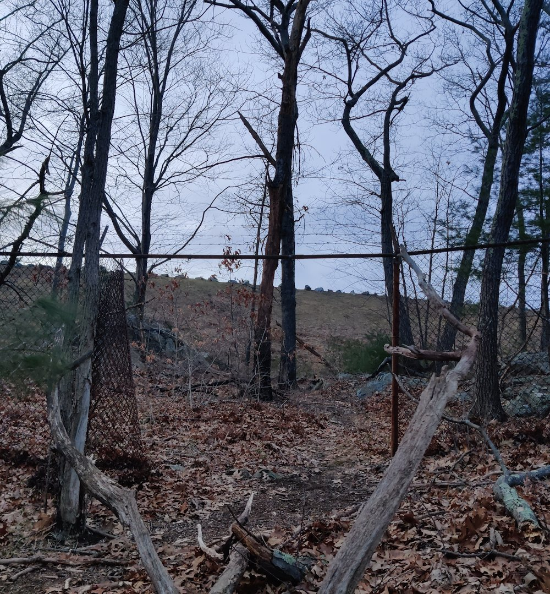
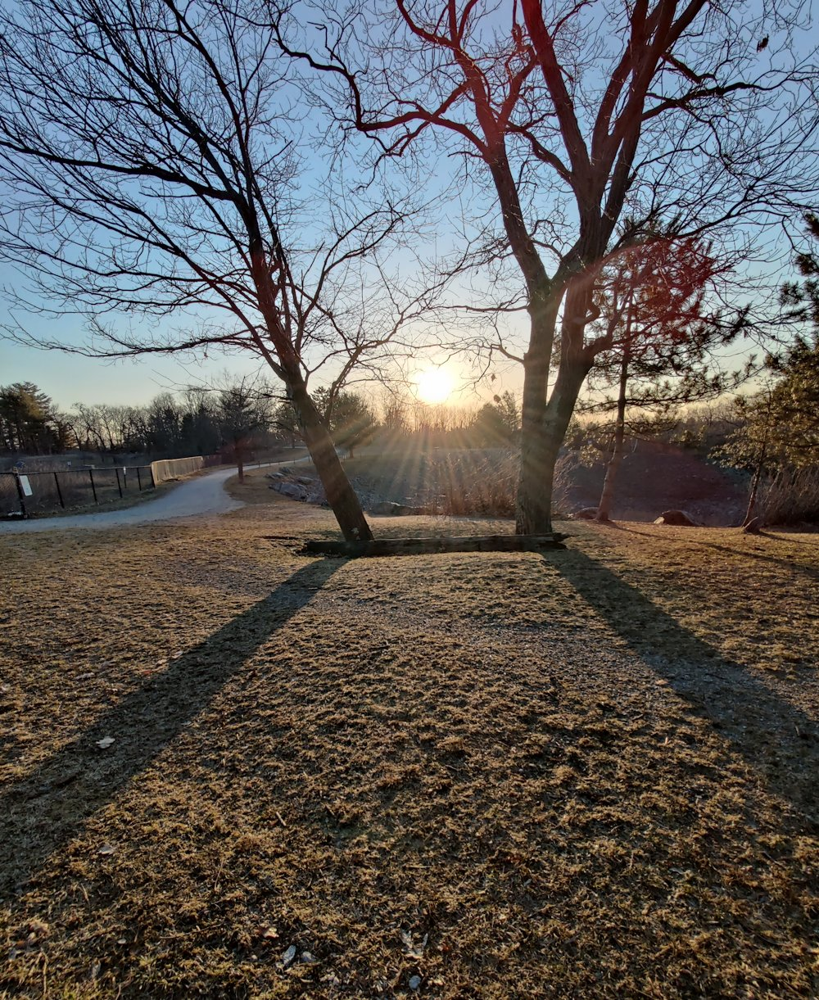
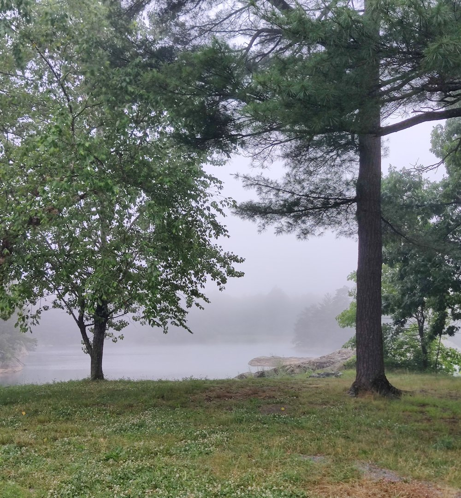
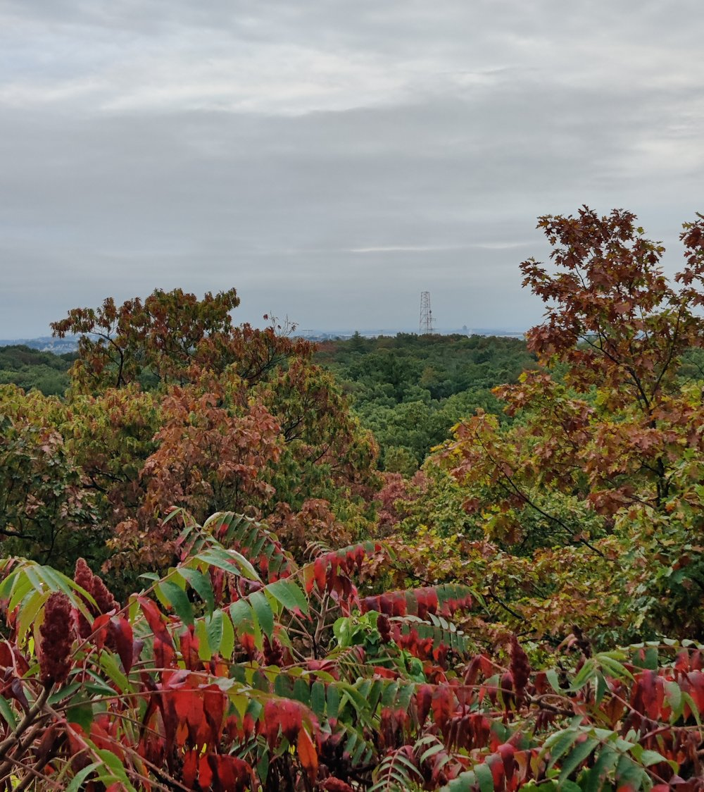

unless otherwise noted, content on this site is under the
Creative Commons Attribution - ShareAlike 4.0 International Public License
Click to skip to the images
Here to skip to the newest entry
The modern backpacker is almost immune to the wiles of the Fae, purely by the nature of the hobby.
An experienced backpacker knows where they are, where they will sleep, and -- often -- whereabouts they plan to be at three in the afternoon tomorrow.
They generally have shelter, drink, and food of their own. And many a Fae has been laughed at for a decade after trying to bind a backpacker by their trailname.
An office worker, though, wandering into a small wood after a day of work, thinking that having roads in all four directions means they can't get lost... that is easier game for the Fae by far.
So you see, the Fae were never really bound to grassy clearings deep in the forest, secluded pools of clear water, nor even to so-called faerie rings.
It's more that, 500 years ago, those were the places where mortals were likely to be wandering, as opposed to travelling with purpose.
In these days, Fae may stalk and scheme rather closer to our houses then we like to think.
|

|
The first place that my crude eyes suspected to be a Gate.
Stone arches and all that still work, of course. But, Fae today are adept with modern materials, even cold metal.
|
|

|
2023 Spring Equinox
|
|

|
2024 Summer Solstice
I did not observe on the proper day, and found a gray morning
|
|

|
2024 Fall Equinox
A gray sky again, but autumn brings their colors
|